Auswertungen
Auswertungen: sehen, wie Ihr Service läuft
SocialHub CX zeigt in Dashboards für E-Mail und Social Media, wie schnell Ihr Team antwortet, wo sich Anfragen stauen und wie der Co-Pilot genutzt wird.

Worum es geht
Sehen Sie, wie Ihr Service läuft – und wer was geleistet hat.
Was enthalten ist
- E-Mail: Tickets gesamt, gelöst, ungelöst, Median-Erstantwortzeit, verspätete Erstantworten, Lösungszeit, One-Touch-Quote, Wiedereröffnungen
- Verläufe, Rückstand, Eingangszeiten nach Stunde, Wochentag oder Monat, Team-Performance
- Vergleich mit Vorzeitraum oder Vorjahr; Filter nach Team und Person
- Agenten-Tabelle und Co-Pilot-Kennzahlen
- Social: Tickets, bearbeitet, Antwortquote, Antwortzeit, Bearbeitungszeit, Verteilung nach Typ, Kanal und Stimmung
- Dashboard: verspätete Erstantworten, pünktlich vs. verspätet je Team und Person
So arbeitet Ihr Team damit
- Wählen Sie Zeitraum, Team oder Person.
- Vergleichen Sie mit dem Vorzeitraum oder Vorjahr.
- Prüfen Sie Rückstand, Eingangszeiten und verspätete Erstantworten.
- Leiten Sie Maßnahmen ab, etwa neue Stichwortregeln oder Vorlagen.
Was nicht enthalten ist
Die Dashboards sind für E-Mail und Social Media getrennt und lassen sich nach Zeitraum, Team und Person filtern.
FAQ
Häufige Fragen
Welche Kennzahlen zeigt SocialHub CX?
SocialHub CX zeigt für E-Mail unter anderem Tickets gesamt, gelöst und ungelöst, Median-Erstantwortzeit, verspätete Erstantworten, Lösungszeit, One-Touch-Quote und Wiedereröffnungen. Das Social-Dashboard zeigt Tickets, Antwortquote, Antwortzeit, Bearbeitungszeit und die Verteilung nach Typ, Kanal und Stimmung.
Kann ich in SocialHub CX Zeiträume vergleichen?
Ja, SocialHub CX vergleicht jeden gewählten Zeitraum mit dem Vorzeitraum oder Vorjahr. Filter nach Team und Person zeigen, wo es hakt. Verläufe, Rückstand und Eingangszeiten nach Stunde, Wochentag oder Monat helfen bei Schichtplanung und bei der Vorbereitung auf Spitzen.
Misst SocialHub CX, wie der Co-Pilot genutzt wird?
Ja, SocialHub CX zeigt Co-Pilot-Kennzahlen: Antworten mit Co-Pilot, übernommene Entwürfe und als hilfreich bewertete Antworten. Bewertungen Ihres Teams stehen zusätzlich in einer Feedback-Übersicht mit CSV-Export bereit. So sehen Sie, ob Ihre Wissensquellen tragen.
Q&A
Fragen und Antworten
Wie kategorisiere und werte ich Beschwerden aus Social Media aus?
SocialHub CX kategorisiert Beschwerden über Tags, die Ihr Team setzt oder die KI auf Wunsch automatisch vergibt, und wertet sie in Dashboards aus. Regelbasierte Ordner bündeln Themen laufend. Das Social-Dashboard zeigt Tickets, Antwortquote, Antwortzeit und die Verteilung nach Typ, Kanal und Stimmung. Im E-Mail-Dashboard vergleichen Sie Zeiträume mit dem Vorzeitraum oder Vorjahr.
Wie messe ich, ob KI-Vorschläge genutzt werden und hilfreich sind?
SocialHub CX zeigt im Dashboard Co-Pilot-Kennzahlen: Antworten mit Co-Pilot, übernommene Entwürfe und als hilfreich bewertete Antworten. Zusätzlich bewertet Ihr Team einzelne Antworten; die Bewertungen stehen in einer Feedback-Übersicht mit CSV-Export bereit. Inhalte, die wiederholt als falsch bewertet werden, landen in einer Prüf-Warteschlange.
Dashboards live sehen
Wir zeigen Ihnen die Funktion an Ihren typischen Anfragen.
- Anbieter und Hosting in Deutschland
- ISO 27001 (SocialHub)
- DSGVO & BDSG, AV-Vertrag auf Anfrage
- Hosting-Anbieter mit BSI-C5-Testat